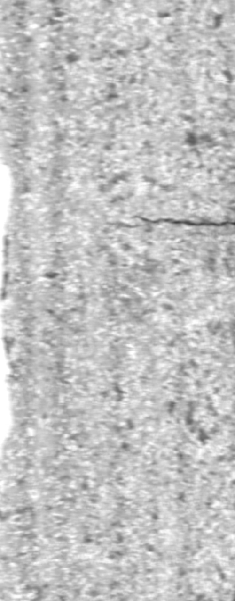
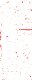

IMAGE-BASED SURFACE REVIEW
See the difference.
Know where to look.
Highlight unusual areas in a photo. Review the score and decide what to check next.
Team 이상무×RIKU
REAL INDUSTRIAL PHOTO01 / 02


HIGHLIGHTED AREAREVIEW SIGNAL
3.50 ANOMALY SCORE
REVIEW NEEDEDInspect the highlighted area to verify the finding.
Open this samplePHOTOHIGHLIGHTREVIEW
REAL EXAMPLES
See it on
real photos.
Select a photo to open its analysis.
- 01
Choose a photo
Upload one or select a real sample.
- 02
Check the highlight
View the heatmap and anomaly score.
- 03
Make the next check
Inspect, retake, or record the result.